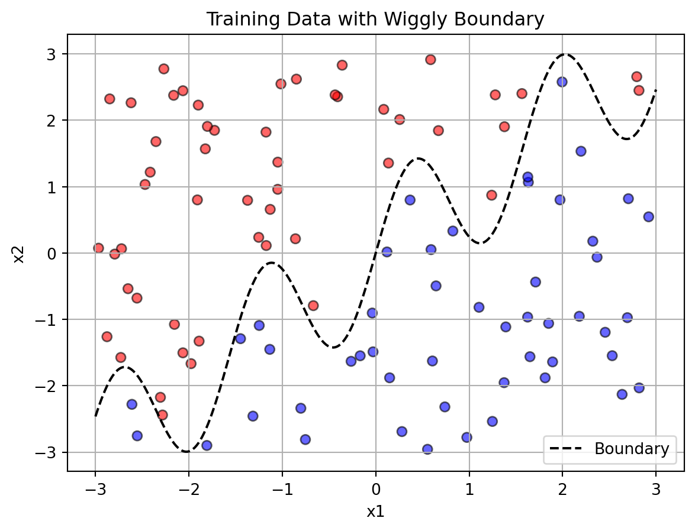

import pandas as pd
import numpy as np
import matplotlib.pyplot as plt
from sklearn.preprocessing import StandardScaler
# Load data
df = pd.read_csv('palmer_penguins.csv')
# Select relevant features and drop NA
X = df[['bill_length_mm', 'flipper_length_mm']].dropna()
scaler = StandardScaler()
X_scaled = scaler.fit_transform(X)Machine Learning in Action: K-Means and KNN
1. K-Means
In this section, we apply the K-Means clustering algorithm to the Palmer Penguins dataset in order to explore natural groupings in the data without using species labels. K-Means is an unsupervised learning technique that partitions data into ùëò distinct clusters based on feature similarity.
We focus on two features — bill length and flipper length — and use both a custom implementation and scikit-learn’s built-in tools to perform clustering. To evaluate the quality of the clusters, we visualize the clustering process with an animation and apply quantitative metrics such as the Within-Cluster Sum of Squares (WCSS) and Silhouette Score to help determine the optimal number of clusters.
This analysis demonstrates how K-Means identifies patterns in biological measurements and how different values of ùëò affect the results.
Data Preprocessing
We start by loading the Palmer Penguins dataset, a popular alternative to the Iris dataset, and selecting two continuous numerical features:
- bill_length_mm
- flipper_length_mm
These features are cleaned by removing rows with missing values (NaN). Then, we apply standard scaling using StandardScaler to normalize the feature values. This step is important because K-Means is sensitive to the scale of the features.
K-Means Algorithm (Custom Implementation)
We implemented the K-Means algorithm from scratch using NumPy. Here’s how it works:
- Initialization: Randomly select k data points as initial cluster centroids.
- Assignment Step: Assign each point to the nearest centroid based on Euclidean distance.
- Update Step: Recalculate the centroids as the mean of all points assigned to each cluster.
- Convergence: Repeat steps 2–3 until centroids stabilize or the maximum number of iterations is reached.
This function returns the final cluster labels and centroids.
def kmeans(X, k, max_iters=100, tol=1e-4):
np.random.seed(42)
centroids = X[np.random.choice(range(len(X)), k, replace=False)]
for i in range(max_iters):
# Assign clusters
labels = np.argmin(np.linalg.norm(X[:, None] - centroids, axis=2), axis=1)
# Recalculate centroids
new_centroids = np.array([X[labels == j].mean(axis=0) for j in range(k)])
# Convergence check
if np.allclose(centroids, new_centroids, atol=tol):
break
centroids = new_centroids
return labels, centroidsK-Means Clustering Animation
To visualize the clustering process over iterations, we created an animation using matplotlib.animation. The animation shows how centroids shift and how points get reassigned over 10 iterations. Points are colored by their current cluster label. Centroids are marked with black x symbols.
import matplotlib.animation as animation
def animate_kmeans(X, k, filename='kmeans_converged.gif', tol=1e-4, max_iters=100):
centroids = X[np.random.choice(len(X), k, replace=False)]
history = []
for _ in range(max_iters):
distances = np.linalg.norm(X[:, None] - centroids, axis=2)
labels = np.argmin(distances, axis=1)
new_centroids = []
for j in range(k):
cluster_points = X[labels == j]
if len(cluster_points) == 0:
new_centroids.append(X[np.random.choice(len(X))])
else:
new_centroids.append(cluster_points.mean(axis=0))
new_centroids = np.array(new_centroids)
history.append((labels.copy(), centroids.copy()))
# Check for convergence
max_movement = np.max(np.linalg.norm(new_centroids - centroids, axis=1))
if max_movement < tol:
break
centroids = new_centroids
# Ensure we have enough frames for the animation
for _ in range(5):
history.append((labels.copy(), centroids.copy()))
# animation
fig, ax = plt.subplots()
def update(frame):
ax.clear()
labels, centroids = history[frame]
ax.scatter(X[:, 0], X[:, 1], c=labels, cmap='Set1', s=40, alpha=0.6)
ax.scatter(centroids[:, 0], centroids[:, 1], color='black', marker='x', s=100)
ax.set_title(f'Iteration {frame+1}')
ax.set_xlim(X[:, 0].min() - 1, X[:, 0].max() + 1)
ax.set_ylim(X[:, 1].min() - 1, X[:, 1].max() + 1)
ani = animation.FuncAnimation(fig, update, frames=len(history), interval=800)
ani.save(filename, writer='pillow')
plt.close()
animate_kmeans(X_scaled, k=3, filename='kmeans_converged.gif')K-Means Clustering Animation
Elbow Method and Silhouette Score
To determine the optimal number of clusters k, we applied two common metrics:
- WCSS (Within-Cluster Sum of Squares): Measures compactness of the clusters.
- Lower values indicate tighter clusters.
- We look for an “elbow point” in the WCSS plot where the rate of improvement slows down.
- Silhouette Score: Measures how similar each point is to its own cluster compared to other clusters.
- Ranges from -1 to 1.
- Higher values indicate better-defined clusters.
We computed both metrics for ùëò = 2 to 7
from sklearn.cluster import KMeans
from sklearn.metrics import silhouette_score
wcss = []
silhouette_scores = []
K = range(2, 8)
for k in K:
km = KMeans(n_clusters=k, random_state=42)
labels = km.fit_predict(X_scaled)
wcss.append(km.inertia_) # Within-cluster sum of squares
silhouette_scores.append(silhouette_score(X_scaled, labels))
fig, ax = plt.subplots(1, 2, figsize=(12, 5))
ax[0].plot(K, wcss, marker='o')
ax[0].set_title('WCSS vs K')
ax[0].set_xlabel('Number of clusters')
ax[0].set_ylabel('WCSS')
ax[1].plot(K, silhouette_scores, marker='o')
ax[1].set_title('Silhouette Score vs K')
ax[1].set_xlabel('Number of clusters')
ax[1].set_ylabel('Silhouette Score')
plt.tight_layout()
plt.show()2. K Nearest Neighbors
In this section, we explore the K-Nearest Neighbors (KNN) algorithm ‚Äî a non-parametric method used for classification based on the proximity of data points in feature space. To illustrate how KNN handles complex decision boundaries, we create a synthetic dataset with a non-linear, sinusoidal boundary and use it to evaluate how KNN‚Äôs performance changes with different values of ùëò, the number of neighbors considered.
Data Generation
We generated a synthetic dataset with two continuous features, x1 and x2, using uniform random sampling from the interval [-3, 3]. The binary outcome variable y is determined by whether a data point lies above or below a wiggly boundary, defined by the function: \[ \text{boundary} = \sin(4x_1) + x_1 \]
This setup creates a non-linearly separable classification problem, which is ideal for testing flexible, non-parametric models like K-Nearest Neighbors (KNN).
import numpy as np
import pandas as pd
import matplotlib.pyplot as plt
# Generate training data
np.random.seed(42)
n = 100
x1_train = np.random.uniform(-3, 3, n)
x2_train = np.random.uniform(-3, 3, n)
boundary_train = np.sin(4 * x1_train) + x1_train
y_train = (x2_train > boundary_train).astype(int)Here, points above the curve are labeled 1, and those below it are labeled 0. This results in a non-linearly separable classification problem — an ideal case for KNN, which does not assume any specific functional form.
Data Visualization
We plotted the training dataset with:
- Horizontal axis: x1
- Vertical axis: x2
- Point color: binary class label y (red = 0, blue = 1)
- Dashed black line: the true decision boundary defined by sin(4x1) + x1
This visual helps us intuitively understand the classification challenge — the data is not linearly separable, and the boundary curves multiple times, making the problem well-suited for KNN.
Test Dataset
To evaluate model generalization, we created a new test dataset using the same method but a different random seed (np.random.seed(7)). This ensures that training and test data are independent but drawn from the same underlying distribution.
# Plot training data
plt.figure()
plt.scatter(x1_train, x2_train, c=y_train, cmap='bwr', alpha=0.6, edgecolor='k')
x1_vals = np.linspace(-3, 3, 300)
plt.plot(x1_vals, np.sin(4 * x1_vals) + x1_vals, 'k--', label='Boundary')
plt.xlabel('x1')
plt.ylabel('x2')
plt.title('Training Data with Wiggly Boundary')
plt.legend()
plt.grid(True)
plt.show()
# Generate test data
np.random.seed(7)
x1_test = np.random.uniform(-3, 3, n)
x2_test = np.random.uniform(-3, 3, n)
boundary_test = np.sin(4 * x1_test) + x1_test
y_test = (x2_test > boundary_test).astype(int)
KNN Implementation
We used scikit-learn‚Äôs KNeighborsClassifier to implement the KNN algorithm and tested it across values of ùëò ranging from 1 to 30. For each value of k, we:
- Trained the model on the training set
- Predicted labels for the test set
- Calculated classification accuracy
- This allowed us to systematically examine how the number of neighbors affects model performance.
from sklearn.neighbors import KNeighborsClassifier
from sklearn.metrics import accuracy_score
# Evaluate KNN performance for k = 1 to 30
X_train = np.column_stack((x1_train, x2_train))
X_test = np.column_stack((x1_test, x2_test))
accuracy_scores = []
for k in range(1, 31):
knn = KNeighborsClassifier(n_neighbors=k)
knn.fit(X_train, y_train)
y_pred = knn.predict(X_test)
accuracy = accuracy_score(y_test, y_pred)
accuracy_scores.append(accuracy * 100)
# Plot k vs accuracy
plt.figure()
plt.plot(range(1, 31), accuracy_scores, marker='o')
plt.xlabel('k (Number of Neighbors)')
plt.ylabel('Accuracy (%)')
plt.title('KNN Accuracy on Test Data (k=1 to 30)')
plt.grid(True)
plt.show()
# Find optimal k
optimal_k = np.argmax(accuracy_scores) + 1
optimal_accuracy = accuracy_scores[optimal_k - 1]
optimal_k, optimal_accuracyResults
The following plot shows accuracy (%) versus k (number of neighbors):
- Accuracy peaks around k = 3
- Overfitting for small k (e.g. k=1)
- Underfitting for very large k (e.g. k=30)
ü•á Optimal K - Optimal k: 3 - Accuracy: 90.0% - This value of k offers the best generalization for this dataset.